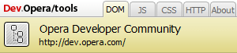
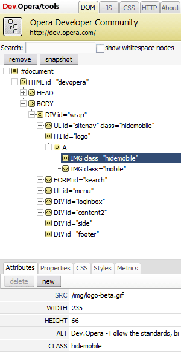
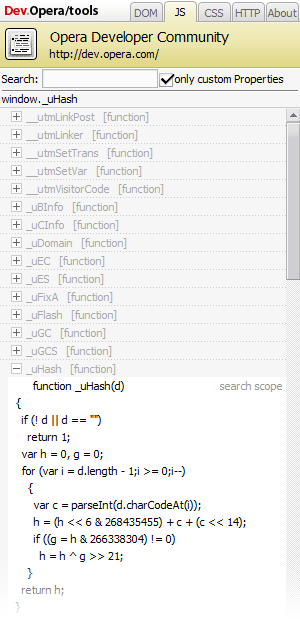
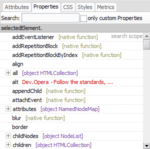
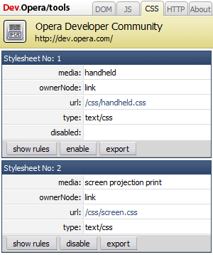

Opera developer console bookmarklet
Note: this bookmarklet is no longer supported, and only here for historical reference. Instead, we recommend you try out our powerful Opera Dragonfly – Opera's built-in web developer tools. There is also an extensive Opera Dragonfly documentation for your reference.
This bookmarklet has been used by Web Application developers at Opera Software for some time. The tools are early previews, and should be considered alpha quality software. They are provided below in the form of buttons that can be dragged to any Opera toolbar. The tools are provided on an as-is basis,
All of the tools should work in Opera 9.0 and later.
Installing developer console
Drag the developer console button directly to any Opera toolbar. Or you can click the button to add the tool to My buttons accessible from the Opera menu under Tools -> Appearance -> Buttons.
Opera Developer Console
Opera now includes a developer console that can be added into the browser with many new features. The developer console includes new tools including DOM inspector, JavaScript inspector, CSS editor and HTTP header inspector.
To install this tool, drag it into any Opera toolbar:
To learn more, look through the documentation below.
DOM Snapshot
The DOM Snapshot tool allows you to inspect the source of a page, as parsed by the browser.
To install this tool, drag it into any Opera toolbar:
Using the Opera Developer Console
The Opera Developer Console is a web technology-based tool for inspecting and analyzing various aspects of a webpage during development or debugging. The Developer Console exposes various aspects of the DOM, the JavaScript environment and the CSS attached to the document. This document is a quick introduction to the Developer Console, and users are expected to be familiar with the DOM and CSS. Some knowledge of JavaScript is also an advantage, but not a prerequisite.
Opening the Developer Console
The console is opened by clicking the Developer Console toolbar button (see installation instructions above). When you do this, Opera will open a Developer console instance for the currently active document.
Console basics
When the Developer Console is opened, the different tools are made available in one of five different tabs:
- DOM
- The DOM tool lets the user inspect and alter various various aspects of the document.
- JS
- The JavaScript tool lets the user to inspect and search the JavaScript environment initialized on the web page.
- CSS
- The CSS tool lets the user inspect and alter any Cascading Style Sheets attached to the page. Further, the tools allow the altered stylesheets to be exported for later use.
- HTTP
- The HTTP tool allows user to inspect the HTTP headers sent from the server, inspect and edit cookies, and allows logging of XMLHttpRequests sent by the document.
DOM Inspection
The node tree
When the DOM Inspector tool is opened, a collapsed node tree is displayed by default, showing the #document node only. To expand the node tree, activate the small plus sign next no the node to expand the tree. Expanded nodes that can be collapsed, have a small minus sign next to the node that can be used to collapse the child nodes.
Selecting nodes in the node tree
As you expand and collapse the node tree, you can click on any node name you wish to select the corresponding node for inspection. When this happens, the corresponding node in the document being inspected will intermittently flash to alert you to which node this is.
Selecting nodes by clicking in the document
When the Developer console DOM Inspector is active, clicking on a node or element in the document will select the corresponding node in the DOM inspection tool, and will expand the node tree correspondingly and display the current that was just clicked.
When visual assistance in selecting nodes is needed, you can hold the Shift key while hovering over nodes in the document to highlight the node you are hovering.
Searching the node tree
Another powerful means to locate a particular node in the document being inspected is through entering a search expression in the DOM Inspector's Search field. The search expressions are standard CSS selectors, and thus any part of the document addressable by a CSS selector is reachable.
When a valid selector has been entered, you can press Enter to initiate the search. When this is done, the Developer Console will only show those parts of the node tree that matches the search. For instance, body > div would only show the div elements that are direct descendants of the body element.
Filtering out whitespace nodes
By default, to prevent too many irrelevant nodes being displayed, the Developer Console hides nodes only containing whitespace from the console. In the case that displaying the whitespace nodes in the Inspector is significant, the Show whitespace checkbox can be checked.
Removing nodes
The DOM Inspector provides a simple means to editing the document by removing entire trees of nodes. When you click the "Remove" button in the upper part of the DOM console, the current node, and any child nodes are removed from the document.
Creating document snapshots
If a snapshot of the edited node tree is needed, the Snapshot button creates a snapshot that is opened in a syntax-highlighted source view. This provides a view of the DOM as it is parsed by the web browser.
Inspecting nodes
When a node in the node tree is opened, and the node selected is an element node, the bottom half of the Inspector displays five additional tabs:
- Attributes
- Attributes that have been set on the corresponding element.
- Properties
- JavaScript properties that are enumerated on the current node.
- CSS
- The CSS rules that apply to the current node.
- Styles
- The styles that apply to the current node.
- Metrics
- Provides a graphical overview of the nodes dimension on the screen, including margins, padding, and borders. In addition, the view provides a list of other dimensional properties that applies to the element.
JavaScript inspection
Inspecting only custom objects and attributes
By default, the Javascript Inspector shows all attributes, objects and functions attached to the document, including the ones set by the browser. To hide the browser-set properties, you can check the "only custom" check box.
Expanding objects
Functions and objects that has readable content have a '+' sign next to them that can be activated to inspect the contents of the object, attribute or method. Should there be nested objects, you get a nested list of objects and properties.
To collapse the objects in the view again, activate the '-' next to the object in question.
Searching
If you are looking for a specific object, the search field will allow you to enter a searchagainst all objects, functions and properties, and only display those, focus the search field and enter an expression.
Inspecting single nodes

In the DOM Inspection tool the tab named 'Properties' works and acts like the JavaScript inspector, but it instead shows the properties and methods for that single node.
CSS inspection
When the CSS tab is opened, the Developer Console displays a list of all the stylesheets on the page, with some information and options for each stylesheet. For each of these stylesheets, there are options to enable or disable, edit and export the stylesheets.
The information available for every stylesheets is:
- media
- Which media type(s) the stylesheet applies to.
- ownerNode
- Where in the current document the stylesheet is inserted. Stylesheets can either be imported by other stylesheets, owned by a link element, or by a style element.
- url
- The URL, if any, of the stylesheet. When the stylesheet exists as a separate document, there will be a clickable link to the stylesheet.
- type
- The content-type of the stylesheet. Normally, this will read text/css.
- disabled
- If the stylesheet is currently disabled, there will be an extra field in the stylesheet information panel, saying disabled.
Enabling and disabling stylesheets
On every stylesheet, there is a button that says either Enable or Disable, depending on whether the stylesheet in question is disabled, or enabled, respectively. By clicking this button, the stylesheet is enabled or disabled.
Note that stylesheets that do not apply to the current media type cannot be enabled, so enabling a handheld stylesheet for a page currently in screen mode is not possible.
Showing rules and modifying style sheets
By selecting the Show rules button, the rules of the selected stylesheet appear, and can be edited by activating one of the selectors.
Exporting modified stylesheets
If you have modified a stylesheet, and need to export the new rules for the stylesheet, activating the Export button. Note that the stylesheet exported will not always correspond 100% with what was in the original stylesheet:
- Font names are substituted for their computed value. For instance, on Linux systems,
font-family: "Bitstream Vera Sans"might get substituted withfont-family: "Bitstream Vera Sans [bitstream]". - Relative URIs are resolved to their absolute location, and will be enclosed in quotes, so
background-image: url(/example.png);on a page/stylesheet on http://www.example.com/ will be exported asbackground-image: url("http://www.example.com/example.png");. - Shorthand properties are expanded to their fully expanded equivalent rules. This means that if the following rule is in a stylesheet:
it will be exported as:body { padding: 1em; }body { padding-top: 1em; padding-right: 1em; padding-bottom: 1em; padding-left: 1em; } - Named colors in properties that accept colors are converted to their equivalent hexadecimal values, so for instance red is converted to #ff0000.
Saving exported stylesheets
Saving the exported stylesheet is done in the same way regular documents are saved in the browser, by going to the File -> Save As menu option (Ctrl-S) when the exported stylesheet is visible.
h4This article is licensed under a Creative Commons Attribution, Non Commercial - No Derivs 2.5 license.
Comments
The forum archive of this article is still available on My Opera.
No new comments accepted.